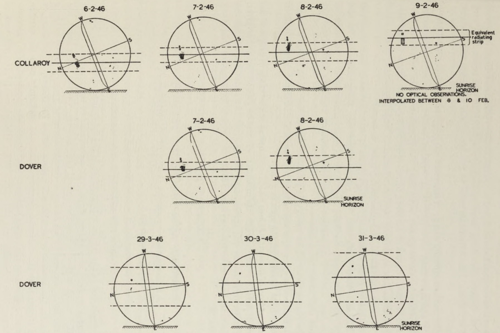
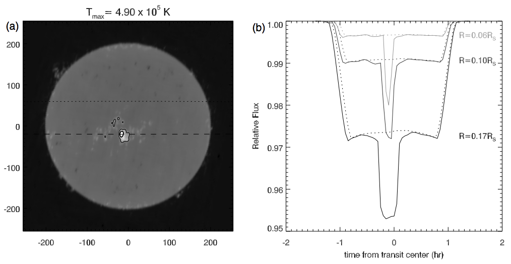
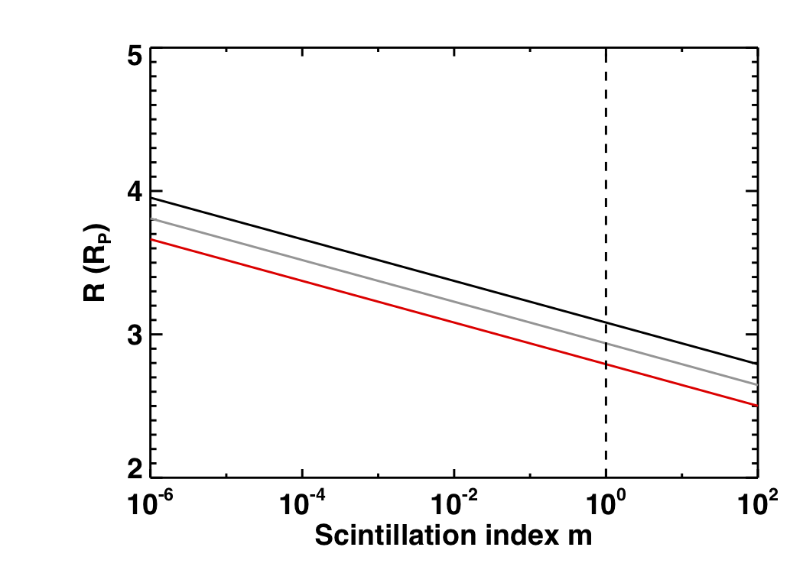
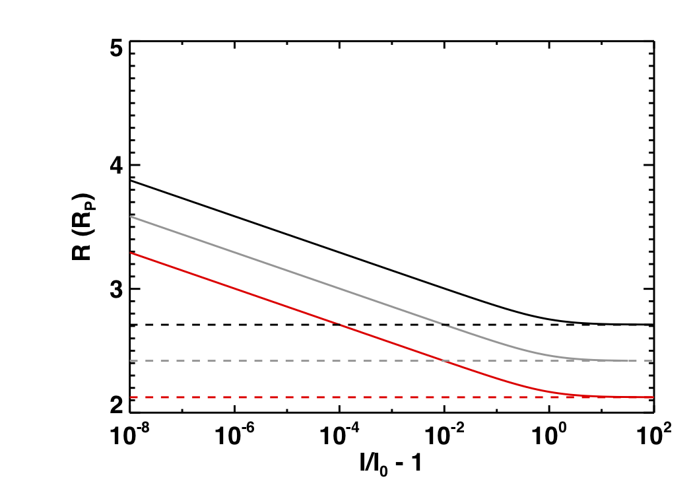

Exoplanet Transits
with Radio Telescopes
Benjamin Pope, NYU
NASA Sagan Fellow
benjaminpope.github.io/talks/astron/astron
Transiting Planets
Exoplanet-style transit light curve of Venus from James Gilbert on Vimeo.
The best options are those around bright stars, like 55 Cancri e - subject of 367 papers in the last decade!
Kepler Photometry
but the pixels have different gains ("inter- and intra-pixel sensitivity variation")...
and the pixel window doesn't necessarily track the whole PSF perfectly ("aperture losses").
Raw - GP in position - GP in time

By subtracting the GP time and spatial components, we can find a transiting planet!

We will be motivated by this here.
Halo Photometry
\[ f_i \equiv \sum\limits_i w_j p_{ij} \]
\[\begin{align} TV \equiv \dfrac{\sum_i |f_i - f_{i-1}|} {\sum_i f_i } \end{align} \]
This is the L1 norm on the derivative of the time series.
This has analytic derivatives you can compute with autograd - easy to optimize.
Pleiades
Πλειάδες, the Seven Sisters
Alcyone, Atlas (dad), Electra, Maia, Merope, Taygeta, Pleione (mum)

Atlas lightcurve: raw (top) and halo (bottom)

Lightcurves of All Seven Bright Pleiades
I am currently searching all bright stars in K2 for transiting planets - none so far, but plenty of asteroseismology!
Radio Stars and Transits
Theorists now say that expanded ionospheres of hot Jupiters might self-absorb this emission down to undetectable levels.
What else can radio astronomy do for exoplanetary science?
The first radio images of the Sun revealed that emission is dominated by active regions (sunspots)
Using 17 GHz maps of the Sun Selhorst et al predicted deep transits across active regions as seen by ALMA.
How well might we do with the SKA?
Using SKA design specifications, we calculate the sensitivity of the SKA to transits around solar-like stars (using VLA fluxes of ε Eridani and the MWA SED of the Sun) and M dwarfs (scaled from LHS 3003), we predict the sensitivity of the SKA to transits.
As we can see, it is very challenging to detect solar-like stars at more than a few parsecs, let alone their transits.
Transits across active M dwarfs, on the other hand, can be seen out to tens of parsecs! Gaia indicates there are many hundreds out to this distance, most undetected so far in radio.
With very significant radio variability and complicated magnetic field topologies, it is harder to see what transits across these will look like.
The magnetosphere of a hot Jupiter planet is expected to cause both strong scintillation...
... and broadband strong lensing.
The Future
Can we predict their light curves better?
What else might the SKA do for exoplanets?